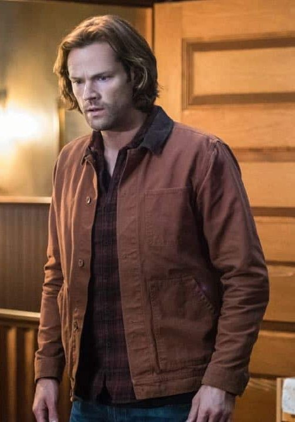
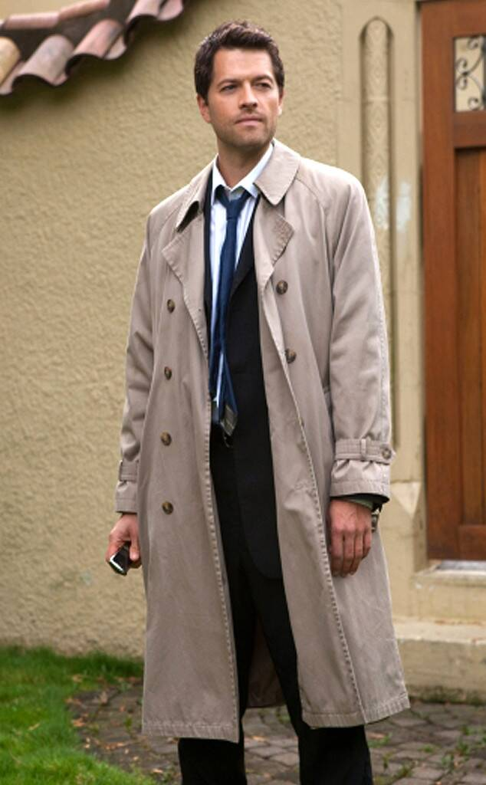
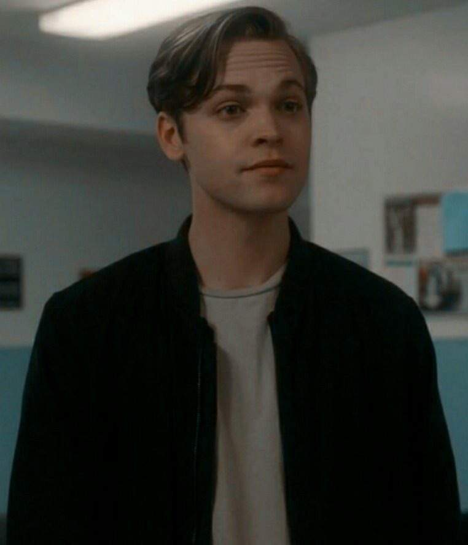

Main Characters
The main characters os Supernatural are the members of the so called Team Free Will 2.0 (Team Free Will being just Dean, Sam and Castiel).
Dean Winchester

"What I do have is a GED, and a give 'em hell attitude and I'll figure it out."
- Dean
Dean Winchester, played by Jensen Ackles, is one of the main characters of Supernatural. He's appeared from season 1 - 15.
Dean Winchester (January 24 1979 - 2020) was a human (briefly a demon, vampire) and a hunter. He and his brother Sam
were raised in the hunting life by their father after Azazel killed their mother. He saved the world several times,
for example when he stopped the leviathan, or when he killed God, who was hell bent on destroying the world.
After defeating God, he died on a vampire hunt.
Trivia
- Dean has died more than any character on the show, because of the time-loop Gabriel stuck Sam in where Dean died over and over, at least a hundred times.
- Dean has killed the most major antagonists in the series, four, Azazel, Abbadon, Dick Roman (Leviathan) and Lucifer.
- Dean has been to the most different realms out of all the characters: Hell, the alternate timeline from The End, Heaven, Avalon (realm of the fairies), the alternate universe from The French Mistake, Purgatory, Apocalypse World, the Bad Place, and the Scooby-Doo Universe.
- Dean has pteromerhanophobia (fear of flying) and is allergic to cats.
Sam Winchester
"It doesn't matter what you are. It only matters what you do."
- Sam
Sam Winchester, played by Jared Padalecki, is one of the main characters of Supernatural. He's appeared from season 1 - 15.
Sam Winchester (May 2 1983 - ???) was a human (albeit one with demon blood) and a hunter. After he was
infected with demon blood at 6 months old by Azazel, who then killed his mother, he spent his childhood hunting Azazel
and other creatures. He went to law school, but got back into the hunting life when his dad, John Winchester, went missing.
Together with his brother Dean, he saved the world, ultimatley by deafeating God. After defeating God and his brother's death,
he retired, had a wife and a son, Dean, and died at an old age.
Trivia
- Sam is the only character to appear in every episode of the series.
- Sam's character was influenced by Luke Skywalker from Star Wars (and Dean's Han Solo).
- Sam is the only Winchester not to have made a deal with a demon, as both his parents had a deal with Azazel and Dean made a deal to get Sam back from the dead.
Castiel
"INow I realize that there is no righteous path, it’s just people trying to do their best in a world where it is far too easy to do your worst."
- Castiel
Castiel, played by Misha Collins, is one of the main characters of Supernatural. He's appeared from season 4 - 15.
Castiel "Cas" (b. the beginning of time) was an angel (briefly human). He was a warrior of God, but after
he saves Dean from Hell he begins to break free from Heaven's control. He has saved the world together with the brothers.
Eventually he makes a deal with the Empty, basically Death for angels and demons, that if he ever feels truly happy it will summon
them, to save his adopted son Jack. In season 15, Death is chasing him and Dean, and by confessing that he is in love with Dean,
he gives himself a true moment of happiness and summons the Empty, which takes him and Death, and he saves the man he loves for the last time.
Later it is mentioned he is eventually ressurected again by Jack and is reforming Heaven with him.
Trivia
- Castiel is one of the most popular characters of the show. 3 different attempts have been made to kill him off, but because of fan's protests he was ressurected again and again.
- Because he believed Castiel would only be in 6 episodes max Misha Collins used a deep gravelly voice for the angel, which he later regretted because it hurts his throat.
- Castiel is the only main character and angel confirmed to be LGBT+. There are however people who deny this and say that Castiel's love confession is actually platonic, despite Dean actually reciprocating in the Spanish version of the series and Cas saying "the one thing I want, it's something I know I can't have", referring to how he does not think Dean sees him romantically. The love confession finally made the massively popular ship "Destiel" happen, which was wanted by fans everywhere.
Jack Kline
"I'm around. I'll be in every drop of falling rain, every speck of dust that the wind blows, and in the sand, in the rocks, and the sea. (...) And those answers will be in each of them. Maybe not today but... someday. People don't need to pray to me or to sacrifice to me. They just need to know that I'm already a part of them and to trust in that. I won't be hands on. Chuck put himself in the story. That was his mistake. But I learned from you and my mother and Castiel that... when
people have to be their best... they can be. And that's what to believe in. Well... I'm really as close as this. Goodbye. "
- Jack
Jack Kline, played by Alexander Calvert, is one of the main characters of Supernatural. He's appeared from season 12 - 15.
Jack Kline (b. May 18 2017) is a nephilim. He is the son of Kelly Kline and Lucifer, but because Kelly
got taken care of by Castiel during her pregnancy, Jack chose Castiel as his father. He gets taken in by Team Free Will
and with them he learns mastering his powers. Dean is especially wary of him, becasue he's the son of Lucifer, but even he warms
up to Jack. Jack is massively powerful since a nephilim is more powerful than the angel that sired it, and he has helped
save the world. In season 15 he absorbes the powers of Michael, Lucifer and God, and then becomes the new God.
Trivia
- Jack is the first known nephilim sired by an archangel.
- Jack is immune to angel blades, just like his father Lucifer.
- Behind the scenes Alexander Calvert actually revealed the possibility Jack could be non-binary.